数据来源：知识星球「南半球聊财经」星主 Jason 不跪当日发帖。本报告抓取了当天（美西时区）全部 16 篇帖子，逐帖做中文深入解读，并解读了帖子里的全部 27 张图片。
今日要点速览
今天的绝对主线只有一个词：美伊缓和。市场在交易"特朗普想要协议、伊朗同意不拥核、霍尔木兹海峡重新开放"这条线索——结果是油价下跌、美股上涨（道指再创历史新高）、黄金回调、美联储加息押注降温。Jason 上午连发多条把这个宏观图景拼了起来（帖 1、7、8），并配上卖方对各类资产的看法。
第二条线索是一大批卖方（投行）中国研究集中落地：消费偏弱但结构分化（高盛、瑞银），电力设备/AI 工业链回调后被看多（JPM、花旗），股票策略上摩根士丹利偏好 A 股、维持中国等配（帖 10–14）。
第三条线索是结构性长趋势的几张"大图"：G7 占全球 GDP 持续下滑（帖 5）、韩国靠移民补劳动力缺口（帖 4）、中国持续干预压住人民币升值（帖 3）、中国生育数据继续走弱（帖 2）、中国信用增速创历史新低（帖 15）。
一句话串起来：地缘风险下降 → 通胀预期回落 → 风险偏好上升（股涨、避险资产跌），同时中国经济的内需和信用仍偏弱，复苏更多靠结构（补贴、AI、高端制造）而非全面回暖。
帖 1 · 16:47 · 特朗普：伊朗同意永不拥核 #其他国家经济
帖子原文
特朗普：伊朗已经同意永远不拥有核武器，此外，美国向伊朗支付 3000 万美元的说法是假新闻 #其他国家经济

一句话核心：特朗普在社媒上官宣"伊朗同意永不拥核"，并否认"美国给伊朗付钱"的传闻——这是今天所有资产价格波动的源头新闻。
背景与关键数据：图片是特朗普本人推文截图（2026/6/15 19:17），原文大意是"伊朗已同意永远不会拥有核武器；说美国付伊朗 3 亿美元（注：推文写的是 300 million，正文转述成 3000 万，两者有出入）是民主党放的假新闻"。注意推文里的金额是 3 亿美元（300 million），与帖子正文的"3000 万"不一致，读的时候以截图为准。
为什么重要 / 对市场的含义：中东、尤其是伊朗与霍尔木兹海峡，是全球原油运输的咽喉。一旦"不打了、要签协议"的预期确立，市场立刻按"地缘溢价消失"来重新定价：油价跌、通胀预期降、股市的风险偏好回升。这条推文就是今天帖 7、帖 8 里油价和美股走势的导火索。
延伸知识——什么叫"地缘风险溢价"：当市场担心战争会中断石油供应时，会提前把油价买高一块，这块"以防万一"的加价就是风险溢价。它不是真实供需造成的，而是恐惧造成的。所以一旦冲突缓和，这块溢价会很快蒸发，油价短时间内可以跌得很猛——这正是今天发生的事。
帖 2 · 15:38 · 中国生育侧面数据继续走弱 #人口
帖子原文
知乎（江畔湘山寺）：目前已知的一些生育侧面数据，广州前 2 个月 -4%，天津前 2 个月 -7%，海南前 3 个月 -3% #人口
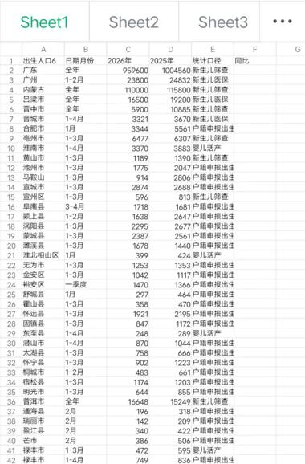
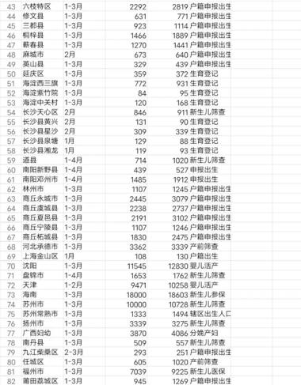
一句话核心：用各地"出生/新生儿"的零散统计拼出一张全国生育地图，结论是各地出生人口普遍同比下滑。
背景与关键数据：两张图是一份按城市/区县整理的出生人口明细表，列出"2026 年"与"2025 年"同期的新生儿数量和"统计径"（即口径，比如新生儿筛查、户籍申报、生育登记等）。几个标志性数字：广东全年 95.96 万 vs 100.46 万；天津 1–2 月 9471 vs 10248（约 -7.6%）；海南 1–3 月 1.8 万 vs 1.86 万（约 -3%）；马鞍山市的降幅在评论区被网友自嘲"冠绝全国"。
图片解读：表格不是官方统一发布的"全国出生人口"，而是把各地能查到的零散指标（医保参保新生儿、户籍申报、生育险、筛查人数等）汇总起来——所以口径不一，但方向高度一致：几乎全是负增长。用很多不同来源、不同口径的数据都指向同一方向，反而比单一数字更有说服力。
为什么重要：出生人口是未来 20–30 年劳动力、住房、教育、消费的总闸门。持续下滑意味着长期潜在增长率下台阶，也是房地产、奶粉、教培等"人口敏感"行业的长期逆风（呼应今天帖 14 奶粉/家电需求疲软）。
延伸知识——"统计径/口径"为什么重要：同一件事，用不同口径统计，数字可以差很多。比如"出生人口"，按医院接生算、按户籍登记算、按医保参保算，时间点和覆盖范围都不同。看数据时第一件事不是看数字大小，而是问"这是什么口径、和谁可比"。Jason 特意把口径那一列保留下来，就是提醒大家别把不同口径的数字直接横比。
帖 3 · 15:32 · 中国持续干预、压住人民币升值 #金融
帖子原文
Brad Setser：中国最新的资产负债表和外汇流量数据显示，中国持续干预以限制人民币升值 #金融
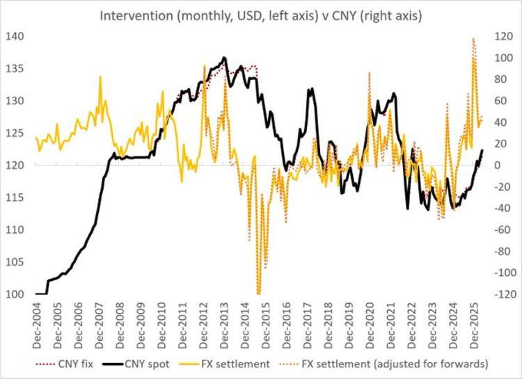
一句话核心：知名国际金融分析师 Brad Setser 指出，从数据看中国央行在悄悄"压"着人民币、不让它升太快。
背景与关键数据：图是一张 2004 年至今的月度图。黑线是人民币即期汇率（CNY spot），红虚线是中间价（CNY fix），橙线是"结售汇"（FX settlement，企业和居民把外汇换成人民币的净流量），橙虚线是调整远期后的结售汇。左轴是汇率区间（100–140），右轴是结售汇规模（约 -120 到 +120）。可以看到 2024–2025 年橙线（结汇）出现非常大的向上尖峰，说明大量外汇在换成人民币、给人民币带来强烈升值压力。
图片解读：当结售汇（橙线）大幅为正、即"市场想买人民币"时，如果央行不出手，人民币本该明显升值；但黑线（即期汇率）并没有同步大涨——这中间的"缺口"，就是 Setser 所说的"干预"：央行通过国有银行在另一边买外汇、放出人民币，把升值压力对冲掉。
为什么重要：人民币升太快会打击出口企业利润（今天帖 13 摩根士丹利也专门提到"关键是温和升值"）。所以中国倾向于让人民币"慢慢升"，而不是"一步到位"。这影响出口股、外储、以及中美之间关于"汇率操纵"的长期争论。
延伸知识——什么是结售汇：企业出口收到美元后，到银行换成人民币，就产生一笔"结汇"；反过来买美元是"售汇"。结售汇净额为正，代表市场上卖美元、买人民币的力量更强，本身会推升人民币。央行可以通过指导国有大行反向操作来"熨平"这种压力，这就是一种不直接动用官方外储、却能影响汇率的"隐形干预"手法。
帖 4 · 15:31 · 韩国把"抢移民、抢人才"当国策 #其他国家经济
帖子原文
ORF：吸引移民已成为韩国的优先事项。2025 年，韩国推出了"顶级签证"，以吸引半导体、生物技术、次级电池和显示器等领域的外籍人才……外国毕业生的就业率首次达到 30%，较前一年增长了 11.7%。此外，韩国提前两年实现了 30 万国际学生的目标…… #其他国家经济
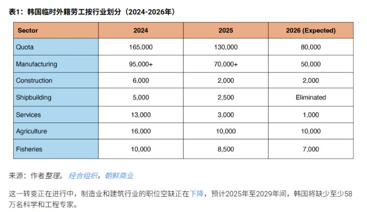
一句话核心：韩国一边用"顶级签证"抢高端人才（半导体、生物、电池、显示器），一边却在削减普通临时外劳配额——人才结构在升级。
背景与关键数据：表格是"韩国临时外籍劳工按行业划分（2024–2026）"。总配额（Quota）从 16.5 万（2024）→ 13 万（2025）→ 8 万（2026 预期），几乎腰斩；制造业 9.5 万 → 7 万 → 5 万；造船（Shipbuilding）甚至直接"Eliminated（取消）"。图下注释：制造业和建筑业职位空缺正在下降，但预计 2025–2029 年韩国仍将缺少至少 58 万名科学和工程专家。
图片解读：这张表乍看和帖子正文"矛盾"——正文说韩国在抢人，表格却在砍配额。其实不矛盾：砍的是低端普通临时工，抢的是高端技术人才。这正是一个老龄化、少子化国家典型的应对：用移民补劳动力，但优先补"高附加值"的那一头。
为什么重要：韩国是中国的邻居+半导体竞争对手，也是同样深陷少子化的经济体。它"抢高端人才、砍低端配额"的做法，是观察东亚国家如何应对人口塌陷的样本。对比帖 2 的中国生育数据，可以一起看东亚的人口困局。
延伸知识——"人口红利"到"人才红利"：经济发展早期靠的是大量年轻廉价劳动力（人口红利）；当人口老化、劳动力变贵后，国家只能转向靠"更高素质的少数人"创造价值（人才红利）。韩国砍普通外劳、抢半导体人才，就是从"要数量"切换到"要质量"的现实写照。
帖 5 · 15:26 · G7 在全球经济中的份额持续滑落 #其他国家经济
帖子原文
CSIS：1980 年，七国集团占全球 GDP 的 60.5%，人口占全球人口的 13.8%。如今，它占全球 GDP 的 44.1%，全球人口的 9.6%。 #其他国家经济
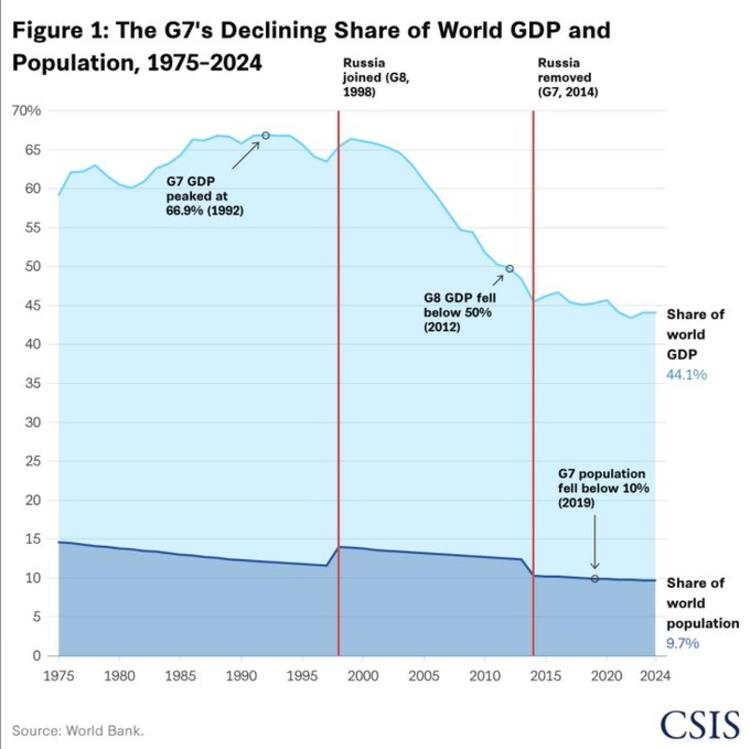
一句话核心：发达国家俱乐部 G7 的"经济块头"在世界里越来越小——从占全球 GDP 六成多降到四成多。
背景与关键数据：CSIS（美国战略与国际研究中心）的图，1975–2024。浅蓝面积是 G7 占全球 GDP 份额：1992 年见顶 66.9%，2012 年 G8 跌破 50%，现在 44.1%。深蓝面积是 G7 占全球人口份额：2019 年跌破 10%，现在 9.7%。图上两条红竖线分别标注俄罗斯 1998 年加入 G8、2014 年被踢出。
图片解读：两条面积线都在长期向下，但 GDP 那条（浅蓝）下滑得更猛。这说明世界经济的重心在从发达国家向新兴市场（尤其是中国、印度）转移。评论区有人点出"2000 年开始下降，看来 cn 吃掉了相当一部分"，方向上是对的。
为什么重要：这是理解过去 40 年全球格局的一张"底图"。它解释了为什么新兴市场资产的长期权重在上升、为什么"去美元化/多极化"会成为话题。但要注意：份额下降不等于 G7 变穷，只是别人长得更快。
延伸知识——份额 vs 绝对量：份额是"相对大小"，绝对量是"自己的体量"。G7 的 GDP 绝对值这些年仍在增长，只是全球这块蛋糕被新兴市场做大了，所以它那一块的"占比"缩小。投资和看世界时要分清"谁在变小"（份额）和"谁在变穷"（绝对量）——这两件事经常被混为一谈。
帖 6 · 15:21 · 二季度中国经济数据波动加大 #经济数据
帖子原文
民生：二季度经济数据波动较往年更大 #经济数据
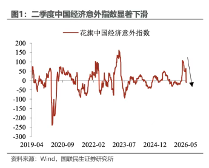
一句话核心：民生证券提示，今年二季度中国经济数据上下起伏比往年更剧烈，"惊喜"正在转为"惊吓"。
背景与关键数据：图是"花旗中国经济意外指数"（Citi China Economic Surprise Index），2019 年至今。指数在 0 上下波动：大于 0 表示实际数据好于市场预期（惊喜），小于 0 表示差于预期（惊吓）。图最右端有一个明显的向下箭头，显示 2026 年二季度该指数从高位快速回落。
图片解读：这条线不是看经济"好不好"，而是看经济"有没有超预期"。它从正区间快速往下掉，意味着前期市场预期打得偏高，现在实际数据不及预期，所以"意外"由正转负。波动加大本身也是一种信号——说明经济的能见度在变差。
为什么重要：经济意外指数是债市、汇市的高频"情绪温度计"。它向下，通常对应利率下行预期升温、对周期类资产偏不利（呼应帖 15 Jefferies 对金属需求的谨慎）。
延伸知识——"经济意外指数"怎么来的：它把一段时间内公布的经济数据，逐个和市场预期对比，好于预期记正分、差于预期记负分，再加权汇总。所以它衡量的是"预期差"而不是"绝对水平"。一个很弱的经济，如果数据比"已经很悲观的预期"还好一点，指数照样能往上走；反之亦然。理解这一点，就不会把"意外指数下跌"直接等同于"经济变差"。
帖 7 · 15:16 · 美国紧急原油储备降到 1983 年以来最低 #其他国家经济
帖子原文
bloomberg：随着特朗普逐步完成释放 1.72 亿桶原油以缓解燃油价格上涨的计划，美国的紧急原油供应已降至自 1983 年以来的最低水平。库存减少使美国在应对未来供应中断方面失去了灵活性。能源部发言人称，计划在未来一年内补充约 2 亿桶储量，比释放量多出 20%。经济学家表示，美国通胀可能已见顶峰…… #其他国家经济
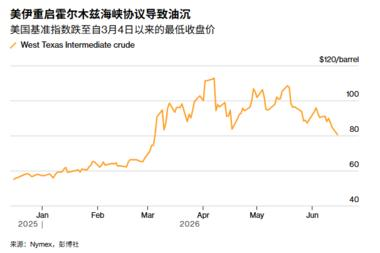
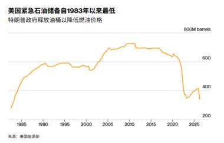
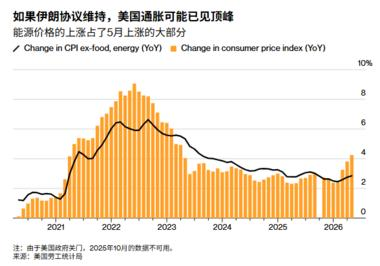
一句话核心：为压住油价，美国把战略石油储备（SPR）放到了 40 多年最低；现在地缘缓和、油价回落，反而给了未来补库存的窗口，通胀也可能见顶。
背景与关键数据：
- 图 1（WTI 油价）：标题"美伊重启霍尔木兹海峡协议导致油沉"，美国基准油价跌至 3 月 4 日以来最低收盘价。图上可见 3–4 月一波急涨（地缘冲突），随后 5–6 月一路回落到约 70–80 美元/桶。
- 图 2（战略石油储备）：纵轴单位 8 亿桶（800M barrels），曲线显示 SPR 在 2005–2020 年维持在 6–7 亿桶高位，2022 年后大幅释放，近期掉到约 3.5 亿桶，处于 1983 年以来最低。
- 图 3（通胀见顶）：黑线是剔除食品能源的核心 CPI，橙柱是整体 CPI（同比）。注释提到"由于美国政府关门，2025 年 10 月数据不可用"。整体看通胀同比已从 2022 年高峰大幅回落、近期低位震荡。
图片解读：三张图是一条因果链——地缘缓和（霍尔木兹通航）→ 油价跌（图 1）→ 通胀压力减轻（图 3）→ 政府有空间慢慢回补已经见底的储备（图 2）。
为什么重要：SPR 是美国应对供应中断的"国家级备用油箱"。放到 40 年最低，意味着以后再遇到危机时缓冲垫变薄了。但短期油价跌、通胀降，对美股和美联储是好消息（减少加息压力，呼应帖 8、帖 9）。
延伸知识——什么是战略石油储备（SPR）：美国从 1970 年代石油危机后建立的应急原油库存，平时存在地下盐穴里，遇到供应中断或油价飙升时释放出来平抑价格。它像家里的"应急储粮"：用掉容易、补回来慢。释放能短期压价，但持续放会削弱国家的能源安全余量——这就是 Jason 想提示的"失去灵活性"。
帖 8 · 15:09 · 特朗普想要协议，油跌股涨、道指新高 #金融
帖子原文
zerohedge：分歧依然存在，但特朗普想要协议，华尔街也是如此。油价下跌、股市上涨，道琼斯工业平均指数又创下历史新高。尽管美债和美元几乎没有波动，但对美联储加息的押注却有所减少。内塔尼亚胡有点伤心，国内支持率滑落至 27% #金融
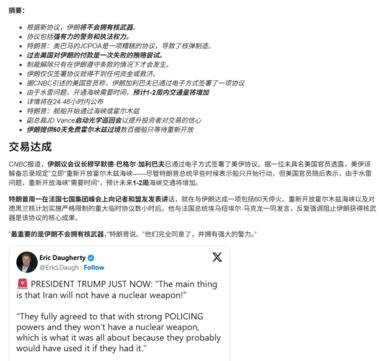
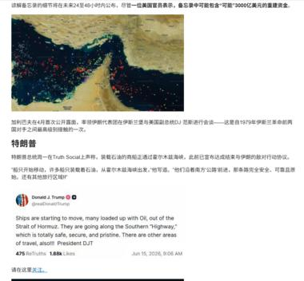
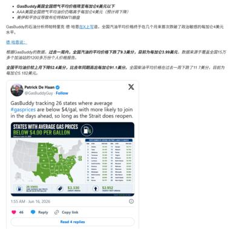
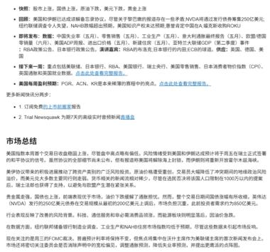
一句话核心：这是一篇 zerohedge 的当日美股收盘综述，把"美伊达成和平框架"如何驱动当天各类资产串了起来。
背景与关键数据（综合 8 张文章截图）：
- 协议层面：副总统万斯上 CNBC 称"美伊达成和平框架，签约仪式将于周五举行"；特朗普发推"船只开始满载石油驶出霍尔木兹海峡……走南方高速公路，安全、顺畅"。
- 当日收盘：标普 500 +1.65% 至约 7554 点，纳指 100 +3.96% 至约 30544，道指 +0.78% 至约 51676，罗素 2000 +0.72%。科技 +3.39%、公用事业 +2.42% 领涨；能源 -1.91%、金融 -2.36% 垫底。
- 其它资产：黄金跌约 1% 到约 4150 美元；美债、美元基本没动；市场对美联储加息的押注降温。
- 油价民生面：GasBuddy 数据，全美 26 个州平均油价已低于 4 美元/加仑，全国均价约 3.99 美元。
- 政治花絮：以色列总理内塔尼亚胡国内支持率滑落至 27%。
图片解读：文章用一连串截图（摘要要点、G7 领导人会面照片、霍尔木兹海峡卫星图+特朗普推文、万斯 CNBC 采访、油轮照片、GasBuddy 油价地图、收盘板块涨跌）把"和平框架"落到每一类资产上。注意板块表里能源和金融跌、科技领涨——这正是"地缘降温"的标准剧本：油跌拖累能源股，避险情绪退潮但利率没大动、金融股反而回吐，钱涌向高弹性的科技/AI。
为什么重要：这帖等于今天宏观叙事的"总账"。它和帖 9（摩根士丹利警告美股涨势依赖杠杆、过度集中科技）形成一组对照：一边是"利好兑现、皆大欢喜"，一边是"涨得太偏、要小心"。
延伸知识——为什么"加息押注降温"利好股市：油价跌→通胀预期降→市场觉得美联储更没必要继续加息甚至可能更早降息→无风险利率预期下行→对股票（尤其是靠未来现金流估值的科技股）是利好。这条"油价→通胀→利率→股票"的传导链，是宏观交易里最常用的逻辑之一，值得记牢。
帖 9 · 14:54 · 摩根士丹利："煤矿里的金丝雀" #金融
帖子原文
摩根斯坦利：美股可能正在出现"煤矿里的金丝雀"。美股上涨越来越依赖杠杆资金，尤其集中在 AI、半导体等狭窄板块；而股权融资成本和交易商股票回购融资敞口都创下高位。如果融资成本继续上升，杠杆买盘可能从边际买入者变成边际卖出者，从而放大美股回撤……过去三个月维度下，11 个 GICS 行业中，目前只有 1 个行业跑赢标普 500：信息技术……我们基准预期是：通胀到 2027 年放缓，使美联储可以在 2027 年 3 月和 6 月各降息 25bp，终端目标区间到 3.00%–3.25%…… #金融
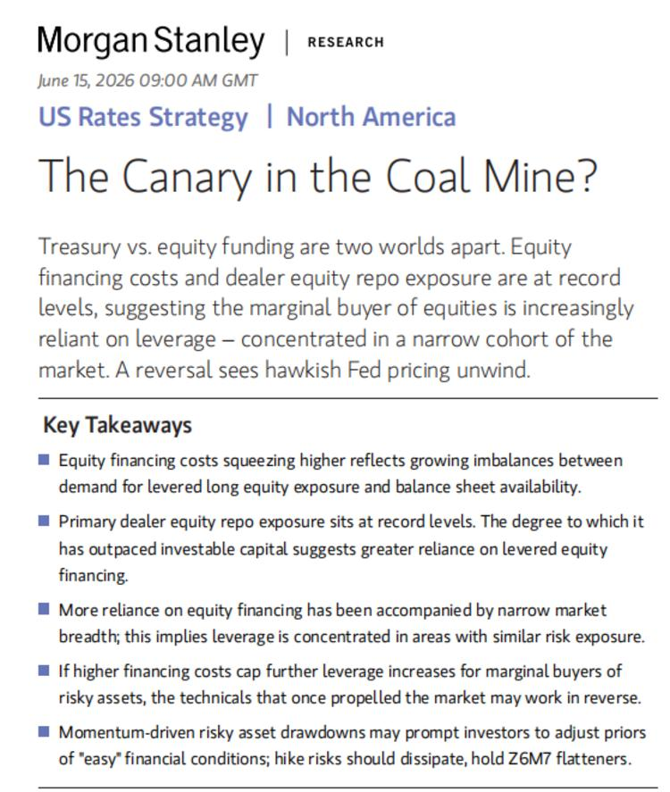
一句话核心：摩根士丹利警告，美股这轮上涨越来越靠"借钱买"和"少数板块带"，一旦融资成本上升，杠杆买家可能反手变卖家、放大下跌。
背景与关键数据：图是这份报告的首页，标题"The Canary in the Coal Mine?（煤矿里的金丝雀）"，US Rates Strategy。核心要点（Key Takeaways）：股票融资成本走高反映"想加杠杆做多"的需求超过了"资产负债表能提供的额度"；一级交易商的股票回购敞口处于历史高位；市场广度变窄意味着杠杆集中在风险相似的少数板块；若融资成本继续封顶杠杆，曾推动市场上涨的技术面可能反向运作。
图片解读：报告标题这张图本身信息量在"标题+五条要点"。要抓住的关键词是 leverage（杠杆）+ narrow breadth（市场广度窄）+ record dealer repo（交易商回购敞口创纪录）——三件事叠在一起，就是"看起来很强、其实根基窄"的典型危险信号。
为什么重要：它直接对冲了帖 8 的乐观情绪。同样是今天，零度对冲在讲"道指新高"，摩根士丹利在讲"小心金丝雀"。两个一起读，才是完整的市场图景：行情可以继续，但"只有信息技术一个行业跑赢大盘"这种极端集中，本身就是脆弱性。
延伸知识——"煤矿里的金丝雀"是什么典故：过去矿工下井会带一只金丝雀，鸟对瓦斯等毒气更敏感，一旦鸟出事，矿工就知道该撤了。它引申为"最早预警危险的指标"。摩根士丹利把"股票融资成本"当作那只金丝雀：它还没让整个市场出事，但已经在异常，提示风险在累积。另一个相关概念是"市场广度（breadth）"——指上涨是靠很多股票一起涨，还是靠极少数权重股硬拉。广度越窄，行情越不健康。
帖 10 · 14:46 · JPM：中韩电力设备回调后，风险收益比变好 #股市
帖子原文
JPM：中国和韩国电力设备公司自 4 月高点以来已经回调超过 20%–30%。近期资金从中国电力设备和风电上游转向 AI 主题，导致相关优质股票出现 20%–30% 回调，但基本面并未明显恶化……我们认为风险收益比更舒服。对于中国电力设备公司，欧盟关税风险有限，中国玩家在欧洲市占率低于 10%。 #股市
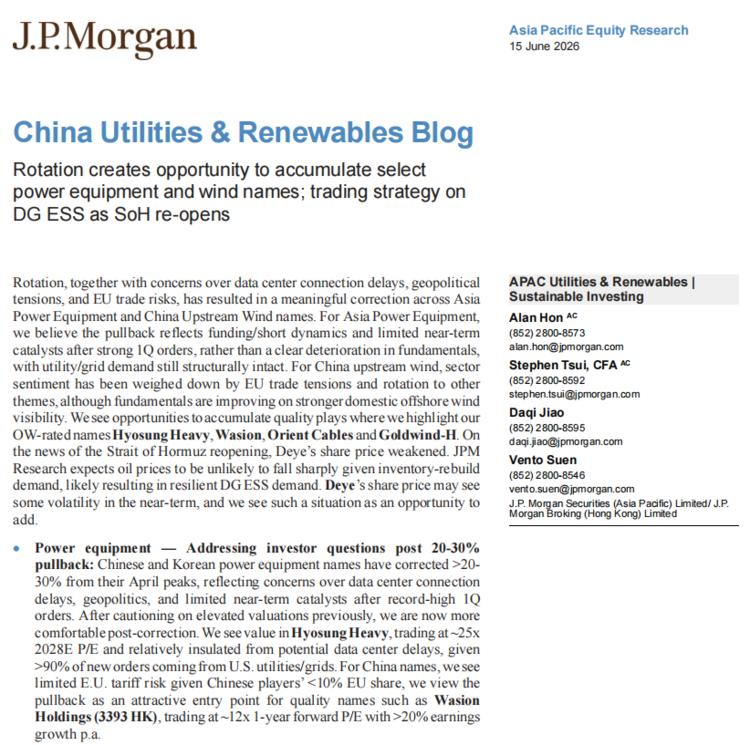
一句话核心：摩根大通认为电力设备/风电这波 20–30% 的回调是"资金轮动"而非"基本面变坏"，是逢低加仓优质股的机会。
背景与关键数据：图是 JPM"China Utilities & Renewables Blog"研究首页。点名看好（OW 评级）的标的：Hyosung Heavy（晓星重工，韩）、Wasion（威胜，3393.HK）、Orient Cables（东方电缆）、Goldwind-H（金风科技）。报告提到 Wasion 约 12 倍未来一年 P/E、年增速超 20%；电网需求有结构性支撑、国内海上风电能见度改善、分布式储能受高油价和能源安全支撑；中国电力设备在欧洲市占率低于 10%，所以欧盟关税风险有限。
图片解读：研究首页的关键是"OW-rated names（增持评级标的）"那几个加粗公司名，以及"pullback…attractive entry point（回调=有吸引力的买点）"的措辞。它把"价格下跌"和"基本面"明确分开——这正是卖方常用的逢低买入逻辑。
为什么重要：它解释了一个常见现象——好公司也会因为"钱去追别的题材（AI）"而被错杀。对持有电力设备/风电的人，这是"是不是该割肉"的参考；对旁观者，是理解"板块轮动"的活案例。
延伸知识——什么是"板块轮动"：市场上的钱总量有限，会在不同主题之间来回流动。当 AI、半导体最热时，资金从电力设备、风电这些"旧主线"撤出，转去追新主线，于是后者即使业绩没变差，股价也会跌。轮动造成的下跌，往往是基本面派眼中的"打折机会"。判断关键就是 JPM 说的那句：跌是因为"资金面/做空动态"，还是"基本面恶化"。
帖 11 · 14:43 · 花旗：中国工业 AI 基础设施 & 机器人调研 #股市
帖子原文
花旗：我们在 6 月 9 日至 12 日组织了中国工业 AI 基础设施和机器人调研，共见了 13 家公司。中国 AI 基础设施供应链公司正在从英伟达新一代架构中拿到更多份额，AI PCB、覆铜板、玻纤布、电源供应、PCB 设备等方向仍是工业板块最强主线；机器人方向更看好零部件而不是整机；工厂自动化和挖掘机也有改善，但地产和传统固定资产投资链条仍弱。 #股市
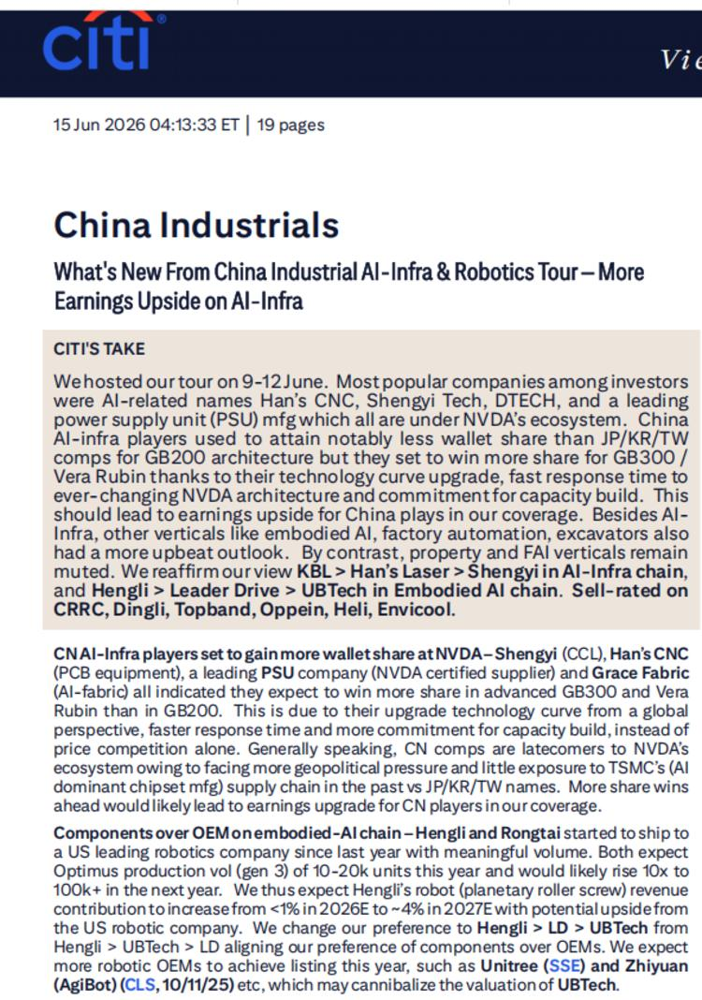
一句话核心：花旗实地走访 13 家公司后，重申最强主线是"AI 基础设施供应链"（PCB、覆铜板等），机器人更看好做零部件的而非做整机的。
背景与关键数据：图是花旗"China Industrials"调研纪要首页（19 页）。点名：AI 主线里 Han's CNC（大族数控）、Shengyi（生益科技）、DTECH（鼎泰高科），以及 PSU（电源）龙头；机器人零部件里 Hengli（恒立）、Leader Drive（绿的谐波） 优于做整机的 UBTech（优必选），偏好排序 Hengli > LD > UBTech；自动化挖掘机有改善但地产/传统固投链条仍弱。
图片解读：纪要首页用加粗标出"最受关注的 AI 标的"和"组件优于整机"的判断。关键信息是这条产业链的传导——英伟达每出一代新架构（GB200→GB300），对 PCB、覆铜板、玻纤布、电源的用量和技术要求就上一个台阶，给上游中国供应商带来"份额+提价"的双重利好。
为什么重要：它告诉你今天美股科技股大涨（帖 8）背后的"卖铲人"在哪里——A 股/港股里真正受益于全球 AI 资本开支的，是这些做 AI 服务器零部件的工业公司。同时它也确认了帖 10 的"资金从电力设备转向 AI"的另一面。
延伸知识——"卖铲子"逻辑：淘金热里最稳赚的往往不是淘金的人，而是卖铲子、卖牛仔裤的人。AI 时代也一样：终端 AI 应用谁赢还不确定，但不管谁赢，都要买服务器、买 PCB、买电源、买玻纤布。所以投资 AI 不一定要押中应用赢家，押"无论如何都要用的基础设施供应商"是另一种思路。花旗这份纪要本质就是在数"AI 的铲子供应商"。
帖 12 · 14:14 · 高盛：5 月中国线上消费偏弱、结构分化 #经济数据
帖子原文
高盛：线上消费追踪显示，2026 年 5 月中国消费品线上表现整体偏弱，但结构分化明显：美妆在抖音、平台补贴和地方补贴推动下明显加速……运动服饰受 618 节奏影响分化；奶粉、白电、小厨电、宠物食品、啤酒和珠宝普遍承压。它说明中国消费不是全面复苏，而是更依赖补贴、内容电商和头部品牌的结构性增长。 #经济数据
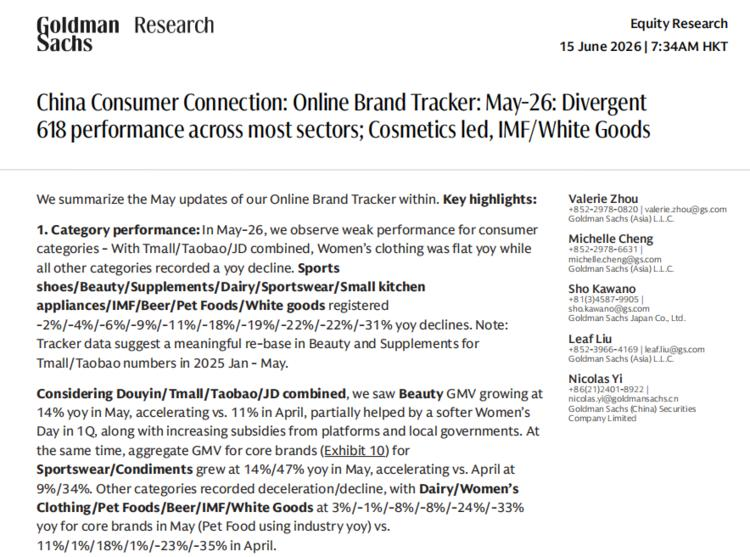
一句话核心：高盛的线上品牌追踪显示，5 月中国消费"整体弱、结构分化"，只有美妆在补贴+抖音带动下加速，其余多数品类下滑。
背景与关键数据：图是高盛"China Consumer Connection: Online Brand Tracker May-26"首页。在天猫/淘宝/京东合并口径下，女装同比持平，其余品类同比下滑，幅度从 -2%/-4%/-6%/-9%/-11%/-18%/-19%/-22%/-22%/-31% 不等（依次大致对应运动鞋/美妆/补剂/乳制品/运动服/小厨电/IMF（婴幼儿奶粉）/啤酒/宠物食品/白电）。但若加进抖音口径，美妆 GMV 同比 +14%（4 月为 +11%，在加速）。
图片解读：报告首页一长串"-2% 到 -31%"的数字，直观说明"线上大盘在退潮"。但同一份报告里美妆加抖音后变成 +14%——一正一负的强烈反差，就是"结构分化"的字面证据：不是所有东西都在涨，而是补贴+内容电商把少数品类（美妆）单独托起来了。
为什么重要：它和帖 14（瑞银白电）、帖 6（经济意外指数）互相印证——中国内需仍偏弱，复苏是"挑着来"的，靠补贴和头部品牌，而不是全面回暖。对消费股投资意味着要选"结构性赢家"（美妆、抖音生态），回避"普遍承压"的奶粉、白电。
延伸知识——什么是"内容电商/GMV"：GMV 是平台上的成交总额（Gross Merchandise Volume）。"内容电商"指抖音、小红书这种"先看内容、被种草、再下单"的模式，区别于天猫/京东这种"有需求才去搜索下单"的货架电商。当传统货架电商增长乏力、内容电商却能靠直播和算法把某些品类（如美妆）单独做高，说明增长的"引擎"在换——这就是"结构性增长"的微观机制。
帖 13 · 14:10 · 摩根士丹利：偏好 A 股，维持中国等配 #股市
帖子原文
摩根斯坦利：MSCI China 今年以来跑输新兴市场，主要原因不是中国完全没有机会，而是新兴市场内部被 AI 存储/半导体超级周期带动……我们仍然维持中国股票 Equal-weight / 等配。不过，在中国内部，我们明确更偏好：A 股 > 离岸中国股票……同时"国家队"仍有较强资金能力。CSI300 基准情景目标：5400，汇率 2026 年底：6.75，人民币温和升值会继续……但如果人民币升值过快，也会压制出口企业利润。所以关键是温和升值。全球和区域长线基金对中国/香港股票仍明显低配。 #股市
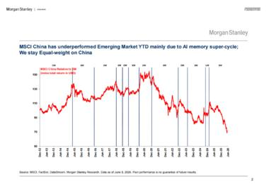
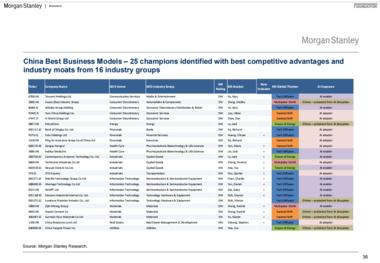
一句话核心：摩根士丹利解释中国今年跑输新兴市场是"题材结构"问题（钱被 AI 存储拉走了），策略上维持中国等配，但更看好 A 股、给 CSI300 目标 5400。
背景与关键数据：
- 图 1：折线图"MSCI China 今年跑输新兴市场，主要因 AI 存储超级周期；维持对中国等配"，展示 MSCI China 相对新兴市场指数的长期走势，近端明显走弱。
- 图 2：表格"China Best Business Models — 25 champions（25 家最佳商业模式冠军）"，从 16 个行业组里挑出竞争优势和护城河最强的 25 家公司，带评级和上行空间。
- 关键数字：CSI300 基准目标 5400，2026 年底人民币兑美元 6.75（温和升值）。
图片解读：图 1 的核心是"相对强弱"——它画的不是中国涨没涨，而是中国相对新兴市场整体是强是弱，近期那条线往下，说明"别人（被 AI 存储带动的韩国、台湾）涨得更多"。图 2 是摩根士丹利给的"选股清单"，强调在一个等配的大前提下，靠选"护城河深的冠军公司"来赚超额收益。
为什么重要：这帖把"为什么中国指数不涨"讲清楚了——不是中国没有好公司，而是指数权重结构没踩中今年最热的 AI 存储/半导体超级周期。偏好 A 股的逻辑（A 股更集中在高端制造、半导体、电力设备）也和帖 11 花旗的产业判断对上了。
延伸知识——"等配（Equal-weight）"是什么意思：这是卖方策略里的相对仓位建议。Overweight（超配）= 比基准多买、看好；Underweight（低配）= 比基准少买、看淡；Equal-weight（等配）= 跟基准一样、中性。说"维持中国等配"，意思是"不特别看多也不看空，按指数标准权重配就行"。再叠加"内部偏好 A 股>离岸"，就是在中性总仓里做结构性的腾挪。另一个有用概念是"低配（underweight）回补"：当全球长线基金对中国"明显低配"时，只要情绪一改善、它们往回补一点仓，就能带来不小的边际买盘——这本身是潜在的上涨催化剂。
帖 14 · 14:05 · 瑞银：中国白电零售继续下滑 #经济数据
帖子原文
瑞银：根据奥维云网 AVC 数据，2026 年前 5 个月，中国白电全渠道零售额同比下滑，幅度从 -2% 到 -19% 不等；扫地机器人线上销售额同比下降 15%。空调最弱，洗衣机相对抗跌。主要原因是：补贴红利消退，以及去年同期基数较高。5 月单月，白电全渠道零售额同比下降幅度从 -4% 到 -14% 不等……整体仍谨慎看中国家电板块 #经济数据
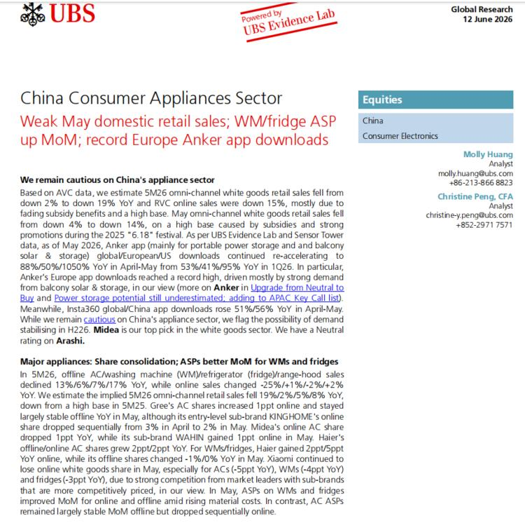
一句话核心：瑞银用奥维云网数据指出中国家电（白电）零售持续负增长，主因是"补贴退坡+去年基数高"，对家电板块仍谨慎。
背景与关键数据：图是瑞银"China Consumer Appliances Sector"研究首页。要点：前 5 月白电全渠道零售额同比下滑 2%–19%，RVC（扫地机）线上 -15%；5 月单月降幅 4%–14%；空调最弱、洗衣机抗跌；线下 AC/洗衣机/冰箱/油烟机销售 -13%/-6%/-7%/-17%，线上 -25%/+1%/-2%/+2%。Midea（美的）是白电首选，对 Arashi 给中性。值得注意的是 WM/冰箱的均价（ASP）环比改善，主因材料成本上升。
图片解读：首页红色副标题"Weak May domestic retail sales（5 月国内零售疲软）；WM/fridge ASP up MoM（洗衣机/冰箱均价环比涨）"已经把矛盾点点出来：量在跌，但单价在涨。量跌是需求弱+补贴退坡，价涨是原材料涨价被动提价——这种"量价背离"通常不是健康的复苏。
为什么重要：白电是观察中国地产链和居民消费的重要窗口（买房才装空调冰箱）。它的持续走弱，和帖 2（人口）、帖 12（线上消费）、帖 15（信用弱、地产弱）共同拼出"内需偏冷、地产仍在拖累"的一致图景。
延伸知识——"高基数效应"：去年（2025）有"6·18"大促和家电补贴，把销量冲得很高，形成一个"高基数"。今年同比就是拿今年和那个被催高的去年比，即使今年绝对销量不算太差，同比也容易是负的。看同比数据时一定要问一句"去年同期是不是特别高/特别低"，否则容易被"-19%"这种数字吓到或误判趋势。这就是所谓的"基数效应"。
帖 15 · 14:01 · Jefferies：中国信用增速创历史新低 #金融
帖子原文
Jefferies：中国 5 月总信用增速进一步放缓，从 4 月的 7.8% 同比降至 5 月的 7.7% 同比，创下历史新低，对周期品不是一个强信号。现在还太早期待中国需求增长明显加速。信用数据偏弱，地产融资偏弱，企业借款偏弱，都说明金属需求缺少强复苏基础。不过，美伊冲突缓和、霍尔木兹海峡重新开放，对金属和矿业可能是利好。 #金融
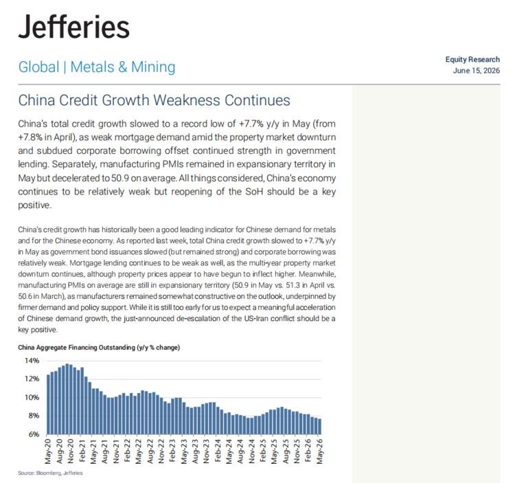
一句话核心：Jefferies 指出中国 5 月信用（融资）增速降到 7.7% 的历史新低，反映需求疲软，对金属等周期品偏负面，但美伊缓和算个对冲利好。
背景与关键数据：图是 Jefferies"China Credit Growth Weakness Continues"研究，配一张"中国社会融资存量同比增速"（China Aggregate Financing Outstanding y/y%）图，2020 年至今从约 13–14% 一路下滑到约 7.7%。5 月制造业 PMI 平均 50.9（仍在扩张区但较 4 月的 51.3 放缓）。
图片解读：那条社融增速曲线是一条清晰的长期下行通道——从 2020 年疫情刺激时的高点，几年里台阶式回落到历史最低。信用增速是"经济血液流速"的代表，它持续放缓，说明企业和居民的借钱意愿（尤其地产相关）一直上不来。
为什么重要：中国信用增速历来是大宗商品（铜、铁矿等金属）需求的领先指标——中国借钱多→盖房子修基建→买金属。信用创新低，对金属是"基本面不支持强复苏"的信号。但 Jefferies 也补了一句：地缘缓和、航运恢复对金属和矿业是利好。两股力量对冲，所以它的结论是"还太早期待加速"。
延伸知识——为什么"社融/信用"是看中国经济的关键先行指标：社会融资规模（社融）衡量整个实体经济从金融体系拿到了多少钱（贷款、债券、股票融资等）。钱先流出来，经济活动才跟着起来，所以社融通常领先 GDP 和工业需求几个月。增速创新低，往往预示未来几个季度的实体需求偏弱。这也是为什么做大宗商品的人天天盯中国社融——它比 GDP 公布得早、对工业需求更敏感。
帖 16 · 13:56 · 巴克莱：黄金这波是"重置"，可以加仓 #金融
帖子原文
巴克莱：黄金过去约 2.5 个月下跌 20%–25%，主要不是因为长期逻辑破坏，而是因为几个短期因素同时打压：美元走强、美股上涨、实际利率上升、油价冲击推高通胀预期和央行鹰派风险、此前黄金多头仓位过于拥挤，导致平仓放大跌幅。这轮下跌后，黄金已经回到约 4150 美元/盎司的公允价值附近。美国 CPI 是黄金中长期最关键的驱动变量……每上升 1%，黄金大约上涨 5%。我们矿股团队的金价预测为 2026 年 4791 美元/盎司、2027 年 4900 美元/盎司。 #金融
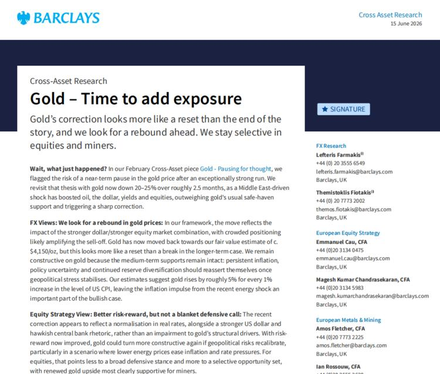
一句话核心：巴克莱认为黄金这波 20–25% 的暴跌是"健康重置"而非趋势终结，已回到约 4150 美元公允价值，是加仓时机，并看 2026 年金价 4791 美元。
背景与关键数据：图是巴克莱"Gold – Time to add exposure（黄金——是时候增加敞口）"跨资产研究首页。核心观点：黄金 2 月那篇报告就提示过会有"暂停"，如今 2.5 个月跌 20–25%，是中东驱动的"油价、美元、收益率、股市"组合拳叠加"多头过度拥挤"的结果，更像一次回调而非破位；黄金已回到约 4150 美元/盎司公允价值附近；中期支撑（持续通胀、政策不确定、央行储备多元化）依然完好；美国 CPI 每涨 1%，黄金约涨 5%；矿股团队预测 2026 年 4791、2027 年 4900 美元/盎司。
图片解读：报告标题"reset than the end of the story（是重置而非故事终结）"是整篇的态度。它把这波下跌拆成几个"短期、会过去"的因素（强美元、股涨、实际利率升、油价扰动、拥挤平仓），潜台词是：这些都不是黄金的长期逻辑，所以跌完反而更值得买。
为什么重要：黄金跌（帖 8 也提到金跌约 1%）和今天"风险偏好回升"的大背景一致——避险资产在地缘降温时被抛售。巴克莱逆向看多，给了一个"别人恐慌时的另一种视角"，也把"黄金长期看什么（通胀、央行购金、实际利率）"讲清楚了。
延伸知识——黄金的三大长期驱动：①实际利率（名义利率减通胀）：实际利率上升，持有不生息的黄金"机会成本"变高，金价承压；下降则利多。②通胀：黄金是经典抗通胀资产，所以巴克莱强调"CPI 每升 1%、金涨约 5%"。③央行购金与储备多元化：各国央行为减少对美元的依赖而增持黄金，是近年金价的结构性支撑。理解这三条，就能判断一次金价下跌到底是"逻辑变了"还是"短期扰动"——巴克莱的判断属于后者。
今日全图索引
| 帖号 | 时间 | 主题 | 标签 | 图片文件名 |
|---|---|---|---|---|
| 1 | 16:47 | 特朗普官宣伊朗同意不拥核 | #其他国家经济 | post1_img1.jpg |
| 2 | 15:38 | 中国生育侧面数据继续走弱 | #人口 | post2_img1.jpg, post2_img2.jpg |
| 3 | 15:32 | 中国干预限制人民币升值 | #金融 | post3_img1.jpg |
| 4 | 15:31 | 韩国抢高端人才、砍普通外劳配额 | #其他国家经济 | post4_img1.jpg |
| 5 | 15:26 | G7 占全球 GDP 份额持续下滑 | #其他国家经济 | post5_img1.jpg |
| 6 | 15:21 | 二季度中国经济意外指数下滑 | #经济数据 | post6_img1.png |
| 7 | 15:16 | 美国战略石油储备 40 年最低 | #其他国家经济 | post7_img1.jpg, post7_img2.jpg, post7_img3.jpg |
| 8 | 15:09 | 美伊和平框架，油跌股涨道指新高 | #金融 | post8_img1.jpg, post8_img3.jpg, post8_img6.jpg, post8_img7.jpg（另存 img2/4/5/8） |
| 9 | 14:54 | 摩根士丹利"煤矿里的金丝雀" | #金融 | post9_img1.jpg |
| 10 | 14:46 | JPM 看好回调后的中韩电力设备 | #股市 | post10_img1.jpg |
| 11 | 14:43 | 花旗中国工业 AI/机器人调研 | #股市 | post11_img1.jpg |
| 12 | 14:14 | 高盛 5 月中国线上消费偏弱分化 | #经济数据 | post12_img1.jpg |
| 13 | 14:10 | 摩根士丹利偏好 A 股、CSI300 目标 5400 | #股市 | post13_img1.jpg, post13_img2.jpg |
| 14 | 14:05 | 瑞银中国白电零售持续下滑 | #经济数据 | post14_img1.jpg |
| 15 | 14:01 | Jefferies 中国信用增速创历史新低 | #金融 | post15_img1.jpg |
| 16 | 13:56 | 巴克莱黄金"重置"、加仓时机 | #金融 | post16_img1.jpg |
说明：帖 8 是一篇 zerohedge 当日美股综述，共抓取 8 张文章截图（post8_img1–8），报告中嵌入了其中 4 张代表性图（摘要+特朗普推文、霍尔木兹海峡卫星图、GasBuddy 油价、收盘板块表），其余 img2/4/5/8 已保存在图片目录备查。全部 27 张原图存于
daily_summaries/jason_images/2026-06-15/。